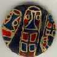

Pete Makarow's Work
|
|
|
|
|
|
| Metallic Work |
|

Pete has lived all over Canada. At two months of age, his family moved to another small town in Saskatchewan called Lajord. It was in Legeorge that Pete started to sketch at the age of twelve. He sketched things around him like grain elevators, windmills and garbage dumps. From the age of twelve, his art garbage dumps. From the age of twelve, his art has flowed naturally without formal art education to influence him. At seventeen, Pete moved to Regina, where he now lives. However, before settling down, he lived in Saskatoon, Saskatchewan, Vancouver, B.C., Edmonton, Alberta and Calgary, Alberta.
It's hard to give Pete one single place on a map but it's another whole story to try to place Pete's art work in a genre. His art is FUN and very original. He likes to have fun; he has fun doing his art and his art itself is fun. You can't just open a textbook, look in the index and he index and see his style there. However, if he had to paint his name and title on an office door, his title would read Folkartist. He is not an historical Folkartist but rather a modern day Folkartist and an urban one at that. Pete finds and uses materials that are discarded around his neighbourhood, anything from pieces of wood to whole boxes.
Once he has the raw materials, he saves them until he needs them. Pete lets his art flow out, like an automatic reflex, until he needs to make a change. He carves some into sculptures, with intricate etchings. He makes chalk portraits. He paints buttons, covering them in bugs.
Over the years, he has been influenced by some of the local artists in Regina: Art McKay and Wayne Tunison. Some of the famous artists that have influenced him are Salvadore Dave influenced him are Salvadore Dali, Picasso and Andy Warhol. He likes Picasso because Picasso was his own man. Pete also like Picasso's like Picasso's work with cubism. Pete identifies with who he calls the demi-god of the artworld, Andy Warhol. He likes Warhol's use of art material. Pete's dislikes include the works of Van Gogh due to his use of thick and heavy paint.
Pete sadly passed away January 1999 in Regina Saskatchewan, and unfortunately, a fire destroyed all of his works except the ones that had been sold or given away. His art is to be viewed backwards, upside down or sideways depending totally on the viewer. Pete also makes his work touchabale saying, "After I'm finished with it, it's the world's."
Pete will be missed. All of his art is available in the above links.
GO TO PETE'S HOMEPAGE